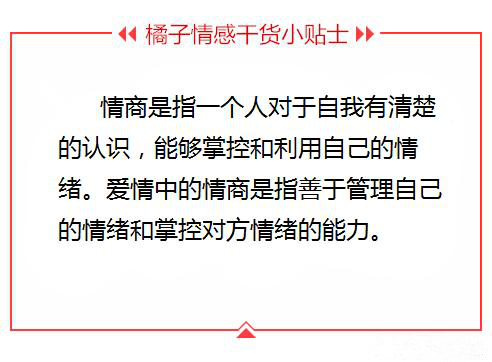
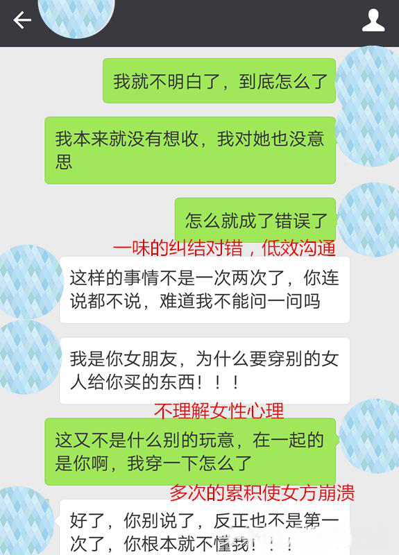
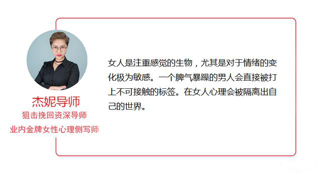
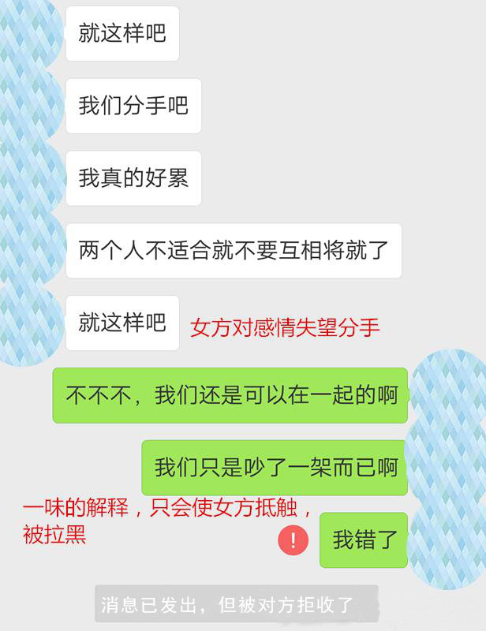
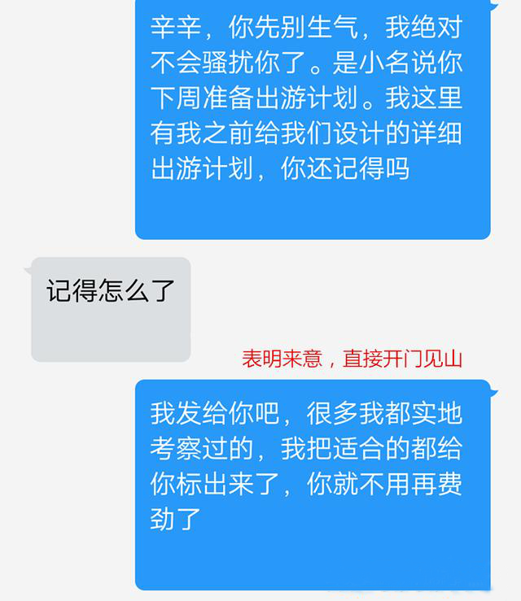
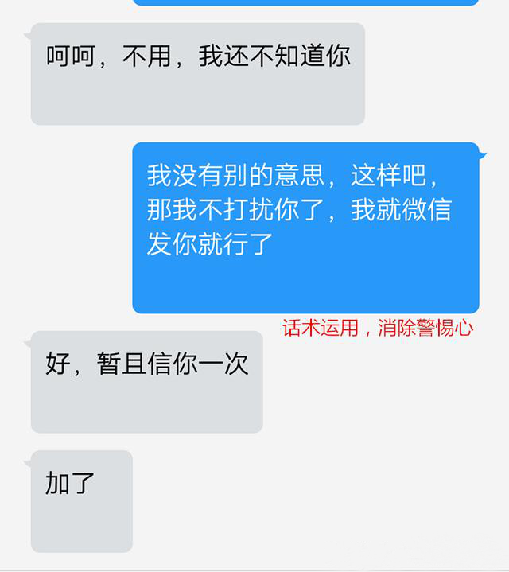
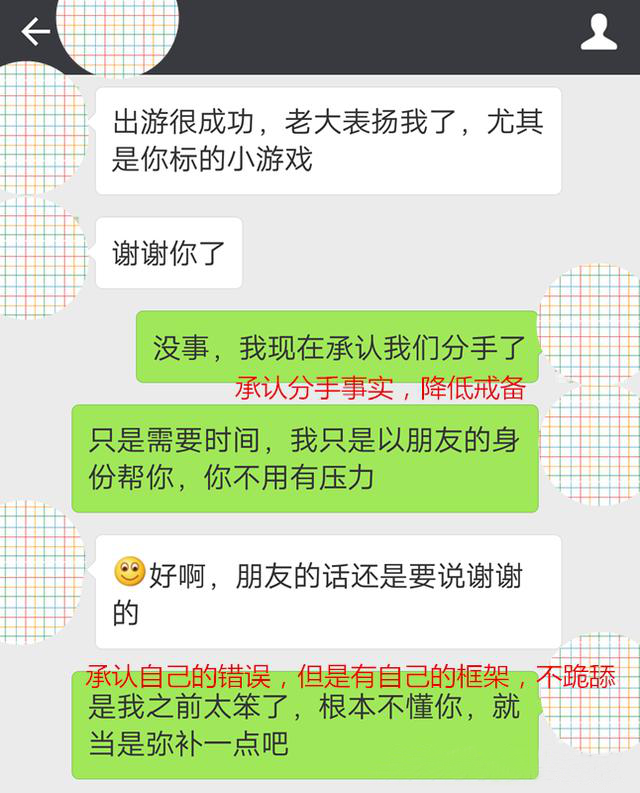
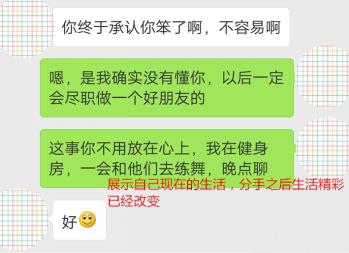

官方二维码
免费情感热线电话
4006-299-520

官方二维码
免费情感热线电话
4006-299-520

大家好，我们是橘子情感。专注情感，为爱而生。 从业八年以来，橘子情感始终秉承着“专注情感、专业服务、专心经营”的原则， 致力于为大家提供挽回爱情、挽救婚姻、 分离小三、订制爱情等两性情感服务。
也许每个人出生的时候都以为这世界都是为他一个人而存在的，当他发现自己错的时候，他便开始长大。 ——《悟空传》
分手总是有很多各种各样的理由，比如说性格不合、三观不合、家庭不合、习惯不合、八字不合甚至可以说星座不合，但是，我们分手真的是因为各种各样的不合适吗？
当然不是。
分手的关键原因在于你情商低，不会沟通。
感情是需要新鲜感的，但凡是分手的感情，都是在时间的消磨下，产生矛盾、隔阂，感情发生破裂的。而直男思维，情商低，只会让爱情的相处变的越来越畸形，很多的时候，我们需要做的就是沟通，把事情讲清楚解决掉，但是问题在于，我们情商低，所以不会有效沟通，很多的隔阂和矛盾，只会使我们的感情陷入危机，走向分别的尽头。
那么，我们挽回的关键，就是解决你情商、沟通的问题。
本期我们主要讨论的问题是以下几点：
今天我就结合一个学员的案例给大家讲解，在感情中，情商低、沟通差的你，只有这样做才能挽回你爱的那个她。
我是王新，一直以来， 我是一个很乖的人，不管是考好的大学，还是做好的工作，我都顺利的完成。接下来就是因为年龄已经30多岁了，所以家人和朋友一直着急这件事情。
我和辛辛是在朋友介绍之下认识的，我没有什么恋爱经验，之前谈过几次也都不了了之。但是我遇见辛辛的感觉就是像初恋一般的心动，我特别的谨慎，也特别的珍惜。
平时我在朋友中也是属于如鱼得水，大家相处非常融洽，但是对于爱情，我是格外的胆小，我害怕她离开，所以我的很多行为都是小心翼翼的。
我这个人说话比较直，我认为感情就是把自己最真实的一面展示出来，两个人没必要假装。所以 我们两个在一些事情上经常会有一些意见，比如说有的时候，我认为不需要在生病的时候矫情，但是她就会在生病之后，就像如临大敌一样，每天都超级脆弱需要关心。生病吃药不就可以了吗。
就是这样的小的事情，有可能就会产生争吵，我也是很委屈。但是我从来没有想过，我们一直争吵都没有什么问题，却因为一次普通的的争吵就闹到分手的地步。
因为公司的一个实习生是我一直带，小姑娘对我有好感，并且送我一根皮带，我虽然拒绝了，但是小姑娘哭着让我收下，我就收下了。回去之后，我也没有说，怕惹她生气。但是有一天我的皮带断了，我就随手把这根皮带带上了，辛辛就问我，我就说了实情。
但是就因为这件事情，辛辛跟我大吵一架，认为我有小三、出轨，但是我并没有，还是被诬陷的，我不断的去解释，但是她根本就不听，我也是很头疼。
 我是真的爱她，并且这件事情也不是我的错，凭什么就要分手，吵架吵的两个人都失去控制，辛辛直接说要分手，摔门而去。我也是怒气冲冲，跟她说“走了就别回来”。说完就后悔了，我打了一晚上的电话给她，她也不接，我发信息，她也不回。
第二天，我正式的收到了她的分手信息。
我开始疯了，我认为是她的错，甚至去骂她，但是骂完之后就开始道歉，我去她们家，去她公司，最后她不但没有回来，反而拉黑了我，再也不跟我联系。
遇到橘子情感是我自己在网上搜索到的，我看了一些文章，有的跟我很像，说话错了，但是对于这样的要怎么办，心里却没有底，添加了导师微信之后，导师详细的给我分析了很多事情，让我对于自己的感情有了一个醒悟的感觉，原来我在感情中竟然是这样的人，我立刻就报名了橘子情感的高端私人挽回课程，是我太自以为是了，我一定要挽回她。
其实在这位高端挽回学员找到我们的时候，情况特别糟糕。学员本身是直男思维非常严重，而且一根筋，对于感情自己的理解非常的畸形。并且在沟通上有很多的问题，对于女性的心理根本没有任何的把控。
所以，我们导师组一致认为，学员的感情破裂关键因素是：情商低、沟通能力差
我们的挽回计划主要是针对以下几点来展开：
学员本身的问题比较多，在心理上也是比较的崩溃，分手之后情绪化的行为比较多，需要后期进行合理化的解释。
学员在女性心理、两性常识上比较缺乏，并且对于很多的情况并不能做的完善的沟通和解决，情商低，情绪把控弱，所以经常会有情绪失控的倾向。
对于自身感情的认识不够，没有深刻意识到自己的问题。
对于学员来说，我们认为，他需要的一方面是对感情的认识，另一方面是对自身情况的认识。所以本次的蜕变是从两个角度开始，同时进行。
一方面在感情方面，主要是实战导师负责，详细的讲解两性的常识、沟通的技巧、如何调动情绪，如何去构建正确合理的爱情关系，长期关系如何维护等等，并且展开详细的模拟实战，对于感情中可能出现的问题进行一一演练并且教导，确认学员能够学会真正的方式。
在另一方面在自身情况方面，我们由心理导师和女性心理侧写师负责，详细的讲解学习自身的理论、挽回的心态、女性的心理和情绪反应以及应对，尤其是针对学员的女人，我们女性心理侧写师进行了很多的侧写工作，也一一的教给学员，以便他在后续的挽回过程中，能够实时的掌控女生的情况，把控挽回的节奏。
学员经过上一阶段的学习，已经意识到了自己的问题，对于自己的情商低以及沟通的问题有了深刻的认识，但是因为着急挽回，所以心态比较紧张，所以心理导师由对学员进行了及时的心理疏导，及时解决，并没有影响到挽回计划的执行。
因为学员的情况是被拉黑，所以我们需要一个机会能够使两人破除拉黑断联的状态，至少能够保持联系，知道对方的情况。
学员挽回的第一障碍就是拉黑的情况，所以我们的挽回首先就是需要重建联系。对于重建联系，破解拉黑，我们团队有专业的导师设计了很多的理论和方案，但是每个人都不一样，比如说有的人适合第三方破冰，有的是硬性破冰，有的是信息破冰，或者其他很多的破冰方法，而每一种 ，我们需要做的也都不一样。
对于学员的情况，两人之间的朋友交集是有的，但是并不多，其他的工作或者其他方面交集也不多，所以我们决定需要搜集女方的信息，开展援助破冰。经过学员身边的朋友帮忙，我们知道了，女方虽然职业是教师，但是对于设计学生的活动没有经验，但是在近期就需要设计一次出游活动。
导师认为这个是男方的优势，更是一个恢复联系的突破口。男方在导师的指导下，开始和女方恢复联系，保持正常的朋友关系。
 学员在挽回的过程中，需对于沟通比较好，因为学员的智商比较高，所以之前爱情的误解也基本已经没有了，在为人处世上也比较好，拥有比较好的高情商，但是在展示面的建设上还是有欠缺，但是已经掌握重点。并不是一定要微信朋友圈发照片，而是多方面的展示，你的优秀和吸引力，你的改变，让女方认为和你分手是错的。
学员在挽回方面，展示自己的吸引力，提升自己的价值。恰好是出游计划比较成功，女方主动给出窗口，愿意感谢男方。但是男方比较担心，担心女方还是会有顾虑，我们的导师和女性心理分析师认为，这其实只是一个普通的窗口，但是我们可以借这个窗口，来展示自己，提升自己的吸引力，消除女方的顾虑，给自己之前的行为一个合理化的解释。
 学员在出游事件成功之后，消除了女方的顾虑，那么重点就在于男方的情商和沟通能力了，因为男方本身的条件其实非常好，高学历、高薪资、高颜值，只是因为一直以来的直男思维局限了自己的感情，对于感情也是没有一个正确的认识，才造成了爱情模式的畸形。
学员经过这一段时间的挽回，对于两性之间的关系有了自己的见解，对于如何经营自己的感情有了自己的正确想法，对于女方的沟通也明显优化加强，顾虑消除，女方也渐渐的暧昧起来。
对于两人之间的进展，导师是一直关注的，对于男方的沟通能力得到认可是非常欣慰的。两人之间进入暧昧期，其实就是差一个时机，使女方同意复合。对于复合的窗口偶，我们的导师也设计了很多，和学员沟通之后，也选择了比较适合女方的含蓄方式，先是送了鲜花给对方，之后邀约在咖啡厅，男方绅士温柔的对女方承认之前的错误，并且合理化最近的行为，对于自己的爱情幡然醒悟，希望能够给双方一个机会。女方对于对方近期的表现非常满意，希望能够一直是这样的，答应复合。
之后，男方在很短的时间之内，就带着女方互见家长，成功完婚。
很多人的情商低，并不是真的情商低，其实就是因为对于爱情的不理解，对爱情有误解，或者长期以来没有人教我们如何谈恋爱，如何相处，所以我们经常会对爱情有误解，认为直男是一种呆萌，但是呆萌久了就会变成一根筋，受尽女人的嫌弃和不理解，两人之间的矛盾一触即发。
所以我们在感情中，需要做的是互相理解谅解，懂得男女之间的思维差别，更好的设身处地的为对方着想，才能更好的经营我们的感情。
关于两性之间的情感，其实还有很多因素会影响最终的事态走向。很多朋友，在挽回的道路上，都有着各自的迷茫，在搞清楚核心问题前，贸然自己去尝试，甚至套用一些网上看到的皮毛，将对方变成了“试验品”，导致情况进一步恶化。
橘子情感从业多年以来，对于爱情挽回和情感狙击也是自成一套，帮助近万例的男女成功收获幸福。如果您有情感问题，一定要及时采取有效措施解决，不要等到失去了才后悔莫及。
{kind=link}